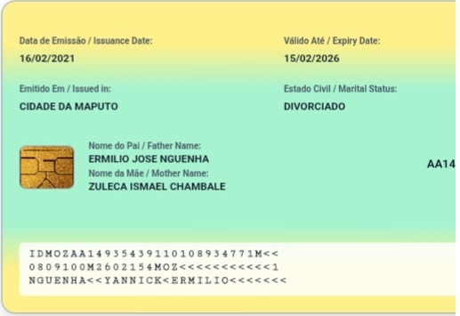
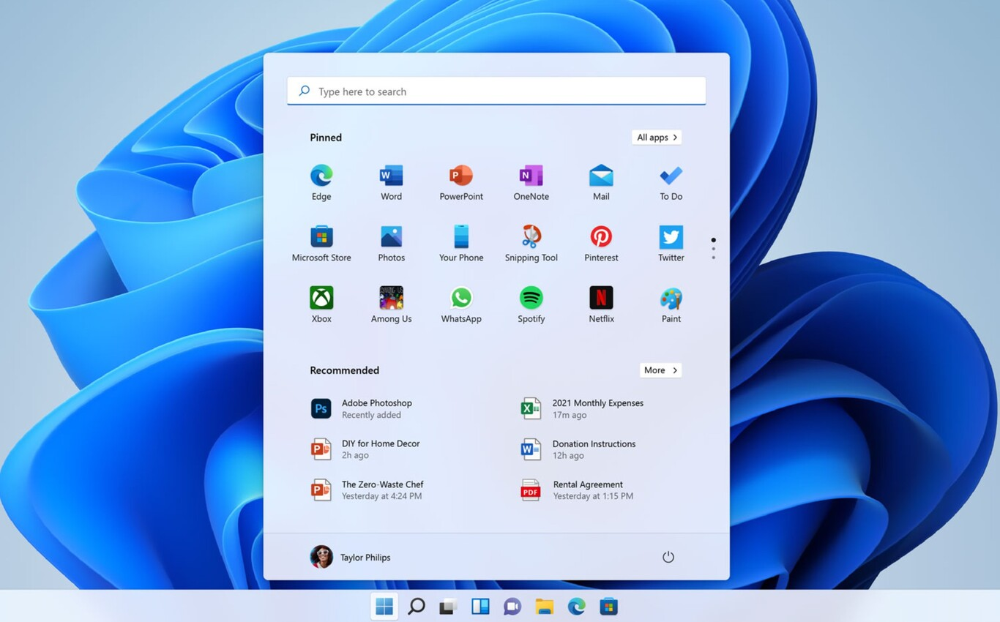

Estudante de Informática no Transportes e Comunicações — ITC
Sou estudante de Informática no Instituto de Transportes e Comunicações (ITC), com foco em suporte Informático. Este portefólio reúne o meu percurso escolar, competências e alguns projectos ligados à minha formação.
Sou estudante de Infotmática no Instituto de Transportes e Comunicações (ITC), com foco em suporte informático. Gosto de resolver problemas técnicos, montar e configurar computadores, e criar páginas web - este próprio portefólio foi construído por mim, em HTML e CSS.
Tenho interesse em tecnologia, organização de processos e Comunicação, e procuro sempre aprender ferramentas novas que me ajudem a crescer profissionalmente.
Montagem, manunteção e diagnóstico de computador e periféricos
Organização de operações, rotas e recursos com foco em eficiência.
Resolução de problemas de software, instalação de sistemas e assistência técnica
Acompanhamento de tarefas, prazos e prioridades.
Criação de páginas web estruturadas e estilizadas, como este portefólio
Transmissão clara de informação, escrita e oral, em equipa.
Noções básicas de configuração de redes e ligação de equipamentos
Word, Excel, apresentações e ferramentas digitais.

Reprodução da estrutura de um Bilhete de Identidade usando HTML e CSS

Projecto académicoInstalação, configuração e preparação de computadores para utilização, incluindo drivers e definições do sistema
Disponível para estágios, trabalhos em grupo e novas oportunidades.